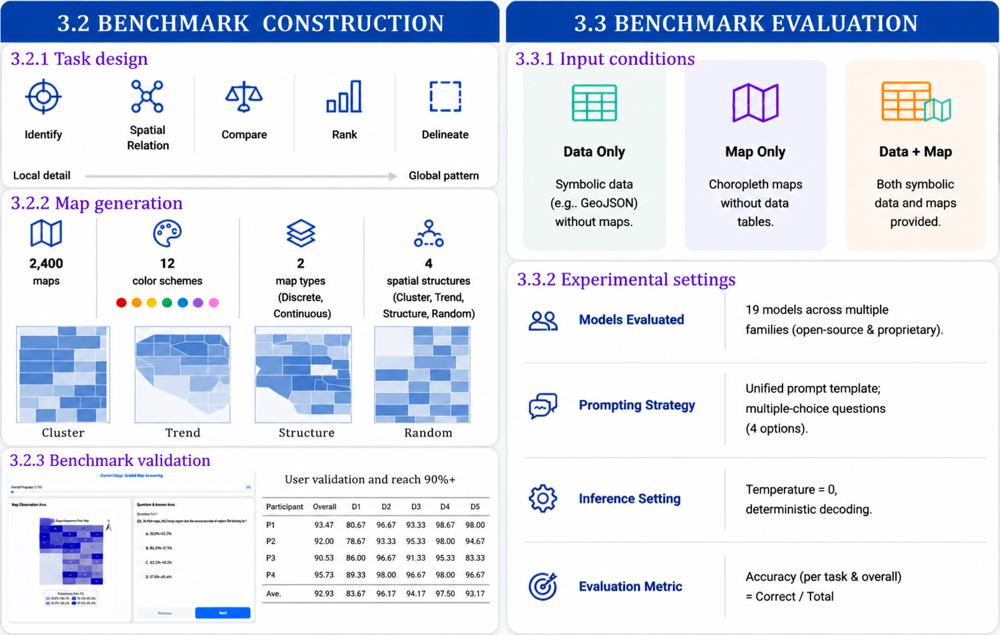
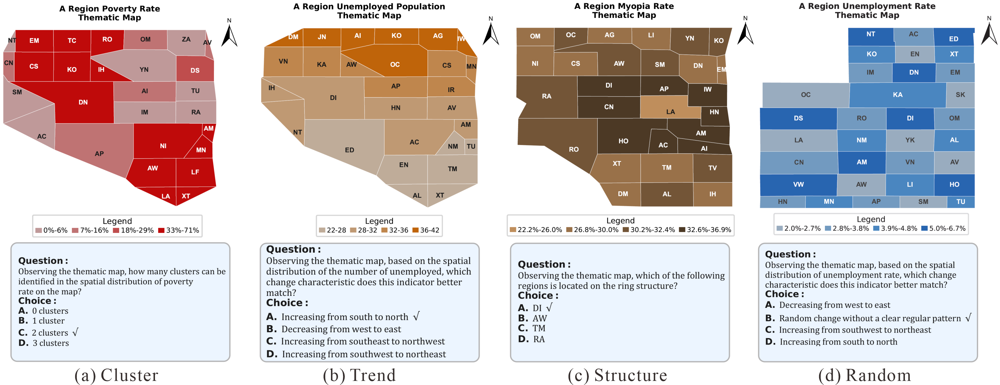
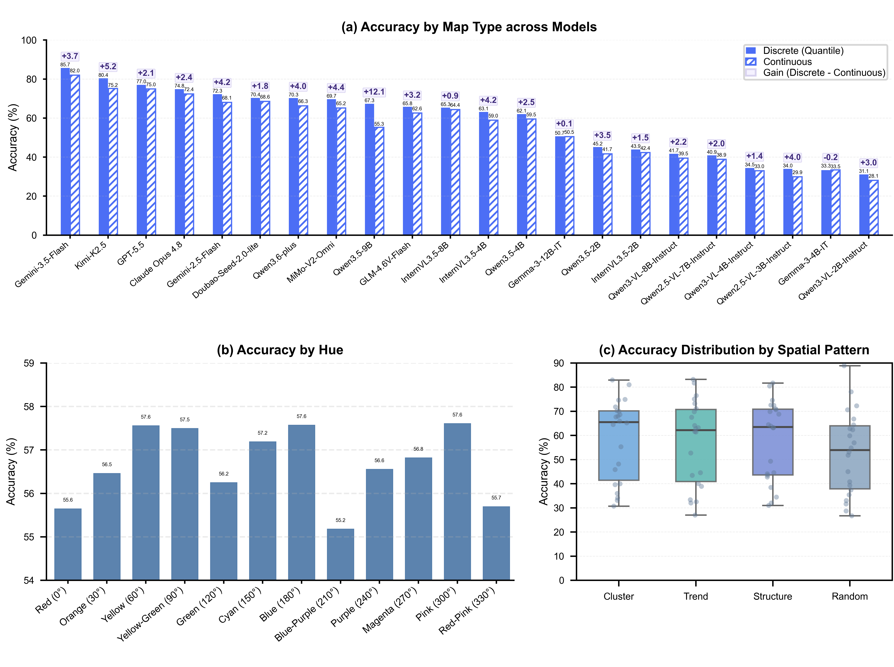

Identify
Retrieve a region from an attribute level, or determine the attribute level of a region.
A controlled benchmark for machine spatial understanding
Revisiting the Role of Choropleth Maps in Foundation Model Spatial Understanding
a School of Geographic Sciences, Hunan Normal University, Changsha, China
b Hunan Key Laboratory of Geospatial Big Data Mining and Application, Changsha, China
c School of Information and Communication Engineering, Beijing University of Posts and Telecommunications, Beijing, China
d School of Artificial Intelligence and Big Data, Wuhan Business University, Wuhan, China
e Advanced Interdisciplinary Institute of Satellite Applications, State Key Laboratory of Earth Surface Processes and Resource Ecology, Faculty of Geographical Science, Beijing Normal University, Beijing, China
f The Aerospace Information Research Institute, Chinese Academy of Sciences, Beijing, China
* Corresponding author
01 / Overview
Foundation models can directly process structured geographic data. We ask whether transforming the same information into a map still improves spatial reasoning.
ChoroplethMap-Bench compares three controlled input conditions: Data Only, Map Only, and Data + Map. Across 22 open-source and proprietary models, the combined representation produces the strongest overall performance, especially on tasks requiring global spatial understanding.

02 / Benchmark
Retrieve a region from an attribute level, or determine the attribute level of a region.
Recognize directional and adjacency relations between geographic regions.
Compare attribute values across a pair of regions.
Find global or neighborhood-level extrema across the map.
Reason about clusters, gradients, rings, and other global spatial structures.
Controlled cartographic design
The benchmark systematically varies discrete and continuous maps, color hue, and four spatial structures: Cluster, Trend, Structure, and Random. Each map is paired with its underlying GeoJSON representation for fair cross-condition comparison.

03 / Evaluation
GeoJSON geometry and regional attributes are supplied as symbolic input.
The rendered choropleth map is supplied without its underlying structured data.
Both representations are supplied together to test whether maps add cognitive value.
04 / Main results
For discrete maps, Data + Map improves average accuracy by 6.0 percentage points over Data Only and 14.8 points over Map Only. For continuous maps, the corresponding gains are 3.9 and 16.3 points.
Overall accuracy (%)
The highest score in each row is emphasized. The combined condition leads almost universally; only Qwen3.6-plus and Claude Opus 4.8 are marginally higher with Data Only.
| Model | Data + Map | Data Only | Map Only |
|---|---|---|---|
| Qwen3.5-9B | 61.3 | 52.6 | 42.7 |
| Qwen3.5-4B | 60.8 | 47.2 | 47.4 |
| Qwen3.5-2B | 43.4 | 37.4 | 37.2 |
| Qwen3-VL-8B-Instruct | 40.6 | 37.4 | 34.8 |
| Qwen3-VL-4B-Instruct | 33.7 | 32.3 | 30.6 |
| Qwen3-VL-2B-Instruct | 29.6 | 28.1 | 29.2 |
| Qwen2.5-VL-7B-Instruct | 39.9 | 33.3 | 34.1 |
| Qwen2.5-VL-3B-Instruct | 31.9 | 29.8 | 29.5 |
| GLM-4.6V-Flash | 64.2 | 40.3 | 50.7 |
| InternVL3.5-8B | 64.9 | 60.8 | 46.9 |
| InternVL3.5-4B | 61.0 | 52.3 | 47.7 |
| InternVL3.5-2B | 43.1 | 39.6 | 36.0 |
| Gemma-3-12B-IT | 50.6 | 48.0 | 30.3 |
| Gemma-3-4B-IT | 33.4 | 32.6 | 28.9 |
| MiMo-V2-Omni | 67.4 | 66.6 | 36.4 |
| Gemini-2.5-Flash | 70.2 | 68.7 | 39.4 |
| Qwen3.6-plus | 68.3 | 68.9 | 34.0 |
| Doubao-Seed-2.0-lite | 69.5 | 66.6 | 42.4 |
| Kimi-K2.5 | 77.8 | 67.2 | 63.1 |
| Gemini-3.5-Flash | 83.9 | 78.7 | 70.3 |
| GPT-5.5 | 76.0 | 74.7 | 44.5 |
| Claude Opus 4.8 | 73.6 | 73.8 | 47.1 |
Gemini-3.5-Flash with Data + Map.
GLM-4.6V-Flash with Data + Map.
Maps become most effective when grounded by symbolic data.
05 / What the results reveal
Twenty of the twenty-two evaluated models achieve their highest accuracy when structured data and rendered maps are provided together.
Top models approach ceiling performance on D1 Identify, but performance drops on D5 Delineate. Gemini-3.5-Flash reaches 99.9% on D1 and 69.1% on D5, compared with 93.2% human accuracy on D5.
Twenty-one of 22 models perform better on discrete maps. Median accuracy falls from Cluster (65.6%) and Structure (63.5%) to Trend (62.2%) and Random (54.0%).
Across twelve tested hues, within-model variation remains below 2.5 percentage points, suggesting that spatial organization matters more than hue choice.


Robustness checks
Tree-of-Thought improves Kimi-K2.5 across all three input conditions, while English prompts provide modest gains for both tested proprietary models. In every comparison, the combined representation remains strongest.
06 / Conclusion
Foundation models can increasingly reason from raw structured information, but that does not make cartographic abstraction obsolete. Across the benchmark, maps provide a compact global view that complements precise symbolic records and reduces the burden of reconstructing spatial structure from data alone.
The strongest representation is therefore not visual or symbolic in isolation, but their combination. This result motivates a new research direction: maps designed not only for human readers, but also for machine perception, reasoning, and decision support.
Data + Map leads for 20 of 22 evaluated models.
Maps expose global patterns that are costly to recover from records.
Cartographic choices shape model performance and reliability.
Maps are not being replaced by foundation models. They are becoming part of how foundation models think spatially.
07 / Resources
08 / Citation
@article{wei2026maps,
title={Do Maps Still Matter for Machines: Revisiting the Role of Choropleth Maps in Foundation Model Spatial Understanding},
author={Wei, Zhiwei and Sun, Yonghe and Liu, Zhenjia and Xu, Wenjia and He, Chao and Dong, Weihua and Liu, Chunbo and Liao, Hua},
journal={arXiv preprint arXiv:2607.17999},
year={2026},
doi={10.48550/arXiv.2607.17999}
}